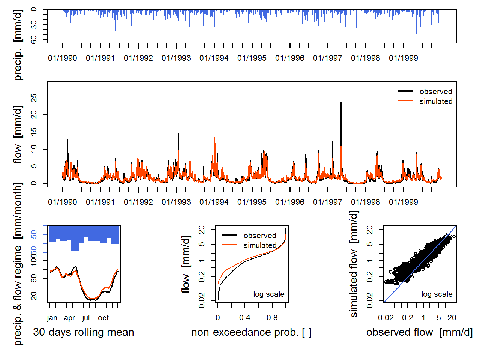

Example
1 Loading data
In the following example, we use a data sample contained in the package, but the user have to import himself his data into R.
Loading package
library(airGR)This is an example of a data.frame of time series of observations of a fictional catchment which contains:
- DatesR: time series dates in the POSIXt format
- P: average precipitation [mm/day]
- T: catchment average air temperature [℃]
- E: catchment average potential evapotranspiration [mm/day]
- Qls: outlet discharge [l/s]
- Qmm: outlet discharge [mm/day]
data(L0123001)
summary(BasinObs)## DatesR P T E
## Min. :1984-01-01 Min. : 0.000 Min. :-18.700 Min. :0.000
## 1st Qu.:1991-04-02 1st Qu.: 0.000 1st Qu.: 4.100 1st Qu.:0.600
## Median :1998-07-02 Median : 0.300 Median : 9.100 Median :1.400
## Mean :1998-07-02 Mean : 2.915 Mean : 9.147 Mean :1.764
## 3rd Qu.:2005-10-01 3rd Qu.: 3.600 3rd Qu.: 14.500 3rd Qu.:2.900
## Max. :2012-12-31 Max. :66.800 Max. : 28.400 Max. :5.500
##
## Qls Qmm
## Min. : 70 Min. : 0.0168
## 1st Qu.: 1643 1st Qu.: 0.3943
## Median : 4070 Median : 0.9768
## Mean : 6134 Mean : 1.4720
## 3rd Qu.: 7889 3rd Qu.: 1.8933
## Max. :99500 Max. :23.8800
## NA's :755 NA's :755Of course you can load your own data with the usual functions (e.g. read.table()).
2 Preparation of inputs
To run a model, the package requires data and options with specific formats.
To facilitate the use of the package, there are several functions which allow to create these objects from simple data:
CreateInputsModel(): to prepare the inputs for the different hydrological models (times series of dates, rainfall, flow, etc.)CreateCalibOptions(): to prepare the options for the hydrological model calibration (choice of parameters to optimize, values of the fixed parameters, etc.)CreateRunOptions(): to prepare the options for the hydrological model run (warm-up period, calibration period, etc.)CreateInputsCrit(): to prepare the options in order to compute efficiency criterions (to choose the criterion, to choose the transformation on flows: “log”, “root”, etc.)
2.1 InputsModel object
To run a GR hydrologic model, the user have to prepare the input data with the CeateInputsModel() function. This function needs the name function relative to the model the user want to run, a vector of dates and a of precipitation.
In the example we already have the potential evapotranspiration. If the user don’t have it, it is possible to compute the potential evapotranspiration with Oudin’s formaul with the PEdaily_Oudin() function (needs julian days, daily mean air temperature and latitude).
Missing values (NA) of precipiation (or potential evapotranspiration) are not allowed.
InputsModel <- CreateInputsModel(FUN_MOD = RunModel_GR4J, DatesR = BasinObs$DatesR,
Precip = BasinObs$P, PotEvap = BasinObs$E)
str(InputsModel)## List of 3
## $ DatesR : POSIXlt[1:10593], format: "1984-01-01" "1984-01-02" ...
## $ Precip : num [1:10593] 4.1 15.9 0.8 0 0 0 0 0 2.9 0 ...
## $ PotEvap: num [1:10593] 0.2 0.2 0.3 0.3 0.1 0.3 0.4 0.4 0.5 0.5 ...
## - attr(*, "class")= chr [1:3] "InputsModel" "daily" "GR"2.2 RunOptions object
The CreateRunOptions() function allows to prepare the options required to the RunModel*() functions.
The user must at least define:
FUN_MOD: the name of the model function to runInputsModel: the associated inputs dataIndPeriod_Run: the run period of the model
To select a period for which the user want to run the model, select the corresponding indices for different time period but not directly the POSIXt dates.
Ind_Run <- seq(which(format(BasinObs$DatesR, format = "%d/%m/%Y %H:%M")=="01/01/1990 00:00"),
which(format(BasinObs$DatesR, format = "%d/%m/%Y %H:%M")=="31/12/1999 00:00"))
str(Ind_Run)## int [1:3652] 2193 2194 2195 2196 2197 2198 2199 2200 2201 2202 ...The models simulate the calculated flow rates if the initial state is known at the beginning of the simulation period. Given the arbitrary nature of initialization, the first values of simulated discharges will not be reliable and should not be taken into account for the calculation of the criterion function. This period must be long enough (at least one year: winter + summer)
So, it is also possible to defin other arguments like:
IniStates: the states of the 2 unit hydrographs (20 + 40 = 60 units)IniResLevels: the levels of the production and routing storesIndPeriod_WarmUp: the warm-up period to adjustIniStatesandIniResLevels
RunOptions <- CreateRunOptions(FUN_MOD = RunModel_GR4J,
InputsModel = InputsModel, IndPeriod_Run = Ind_Run,
IniStates = NULL, IniResLevels = NULL, IndPeriod_WarmUp = NULL)## Warning in CreateRunOptions(FUN_MOD = RunModel_GR4J, InputsModel = InputsModel, : Model warm-up period not defined -> default configuration used
## The year preceding the run period is used## Warning in CreateRunOptions(FUN_MOD = RunModel_GR4J, InputsModel = InputsModel, : Model states initialisation not defined -> default configuration usedstr(RunOptions)## List of 6
## $ IndPeriod_WarmUp: int [1:365] 1828 1829 1830 1831 1832 1833 1834 1835 1836 1837 ...
## $ IndPeriod_Run : int [1:3652] 2193 2194 2195 2196 2197 2198 2199 2200 2201 2202 ...
## $ IniStates : num [1:67] 0 0 0 0 0 0 0 0 0 0 ...
## $ IniResLevels : num [1:2] 0.3 0.5
## $ Outputs_Cal : chr "Qsim"
## $ Outputs_Sim : chr [1:16] "DatesR" "PotEvap" "Precip" "Prod" ...
## - attr(*, "class")= chr [1:3] "RunOptions" "GR" "daily"The CreateRunOptions() function returns warnings if the default initialisation options are used:
IniStatesandIniResLevelsare automatically set to initialise all the model states at 0, except for the production and routing stores which are initialised at 50 % of their capacityIndPeriod_WarmUpdefault setting ensures a one-year warm-up using the time steps preceding theIndPeriod_Run
3 Criterions
The evaluation of the quality of a simulation criteria can be used both as objective function during the calibration of the model, or as a measure for evaluating its control performance.
The package offers the possibility to use different criterions:
ErrorCrit_RMSE(): Root-mean-square error (RMSE)ErrorCrit_NSE(): Nash–Sutcliffe model efficiency coefficient (NSE)ErrorCrit_KGE(): Kling-Gupta efficiency criterion (KGE)ErrorCrit_KGE2(): Kling-Gupta efficiency criterion (KGE’)
It is also possible to create your own criterion. For that, you just have to define your own function in R.
4 Calibration
The objective of the calibration step is learning model to identify and recognize the hydrology of the watershed: by comparing the model with input and output observed series, one can find the combination of parameters for representing the better behavior of the watershed.
4.1 Preparation of inputs
4.1.1 InputsCrit object
The CreateInputsCrit() allows to prepare the input in order to calibrate the model. The user have to define at least:
FUN_CRIT: the error criterion functionInputsModel: the inputs of hydrological model previously prepare by theCeateInputsModel()functionRunOptions: the options for the hydrological model previously prepare by theCreateRunOptions()functionQobs: the observed discharges serie expressed in mm/time step
Missing values (NA) of observed discharges are allowed.
InputsCrit <- CreateInputsCrit(FUN_CRIT = ErrorCrit_NSE, InputsModel = InputsModel,
RunOptions = RunOptions, Qobs = BasinObs$Qmm[Ind_Run])
str(InputsCrit)## List of 5
## $ BoolCrit : logi [1:3652] TRUE TRUE TRUE TRUE TRUE TRUE ...
## $ Qobs : num [1:3652] 1.99 1.8 2.86 2.4 3.31 ...
## $ transfo : chr ""
## $ Ind_zeroes: NULL
## $ epsilon : NULL
## - attr(*, "class")= chr "InputsCrit"4.1.2 CalibOptions object
The user also need to prepar the calibration option with the CreateCalibOptions()function. For that he had to define:
FUN_MOD: the name of the model function to runFUN_CALIB: the name of the calibration algorithm
CalibOptions <- CreateCalibOptions(FUN_MOD = RunModel_GR4J, FUN_CALIB = Calibration_Michel)
str(CalibOptions)## List of 5
## $ OptimParam : logi [1:4] TRUE TRUE TRUE TRUE
## $ FixedParam : logi [1:4] NA NA NA NA
## $ SearchRanges : num [1:2, 1:4] 4.59e-05 2.18e+04 -1.09e+04 1.09e+04 4.59e-05 ...
## $ StartParam : num [1:4] 247.151 -0.649 42.098 1.944
## $ StartParamDistrib: num [1:3, 1:4] 169.017 247.151 432.681 -2.376 -0.649 ...
## - attr(*, "class")= chr [1:3] "CalibOptions" "GR4J" "HBAN"4.2 Calibration run
In the airGR package, function Calibration_Michel() allows to run the calibration step. The calibration algorithm optimises the error criterion selected as objective function. This algorithm works in two steps:
- a screening is performed using either a rough predefined grid or a list of parameter sets
- a simple steepest descent local search algorithm is performed from the best set of parameters found at the firts step
OutputsCalib <- Calibration_Michel(InputsModel = InputsModel, RunOptions = RunOptions,
InputsCrit = InputsCrit, CalibOptions = CalibOptions,
FUN_MOD = RunModel_GR4J, FUN_CRIT = ErrorCrit_NSE)## Grid-Screening in progress (0% 20% 40% 60% 80% 100%)
## Screening completed (81 runs):
## Param = 247.151 , -0.020 , 83.096 , 2.384
## Crit NSE[Q] = 0.7685
## Steepest-descent local search in progress
## Calibration completed (20 iterations, 226 runs):
## Param = 257.238 , 1.012 , 88.235 , 2.208
## Crit NSE[Q] = 0.7985Param <- OutputsCalib$ParamFinalR
Param## [1] 257.237556 1.012237 88.234673 2.207958Only one function Calibration_Michel() is implemented to calibrate the model, but the user can define is own calibration function.
This function returns the parameters of the choosen model. So the number of parameters is not always the same.
5 Validation
This step ensures the predictive power of the model. This is to measure the accuracy of the model on samples of data that were not used in its construction, and in particular its timing. The use is to keep data from a period separated from the calibration period. As possible, this control period should correspond to different climatic situations rather than those of the calibration period in order to better point out the qualities and weakness of the model. This exercise is very useful for assessing the robustness of the model, that is to say its ability to keep stable performance outside the stall conditions.
With airGR the validation steps are the same as the simulation steps.
6 Simulation
6.1 Simulation run
To run a model the user have to use the RunModel*() functions. All the data needed have already been prepared.
OutputsModel <- RunModel_GR4J(InputsModel = InputsModel, RunOptions = RunOptions, Param = Param)
str(OutputsModel)## List of 16
## $ DatesR : POSIXlt[1:3652], format: "1990-01-01" "1990-01-02" ...
## $ PotEvap : num [1:3652] 0.3 0.4 0.4 0.3 0.1 0.1 0.1 0.2 0.2 0.3 ...
## $ Precip : num [1:3652] 0 9.3 3.2 7.3 0 0 0 0 0.1 0.2 ...
## $ Prod : num [1:3652] 196 199 199 201 200 ...
## $ AE : num [1:3652] 0.2833 0.4 0.4 0.3 0.0952 ...
## $ Perc : num [1:3652] 0.645 0.696 0.703 0.74 0.725 ...
## $ PR : num [1:3652] 0.645 5.946 2.383 4.992 0.725 ...
## $ Q9 : num [1:3652] 1.78 1.52 3.86 3.17 3.45 ...
## $ Q1 : num [1:3652] 0.2 0.195 0.271 0.387 0.365 ...
## $ Rout : num [1:3652] 53.9 53.6 55.3 56.1 56.9 ...
## $ Exch : num [1:3652] 0.181 0.18 0.177 0.197 0.207 ...
## $ AExch : num [1:3652] 0.362 0.36 0.353 0.393 0.414 ...
## $ QR : num [1:3652] 2.05 1.99 2.36 2.55 2.78 ...
## $ QD : num [1:3652] 0.381 0.375 0.447 0.584 0.572 ...
## $ Qsim : num [1:3652] 2.43 2.37 2.8 3.14 3.35 ...
## $ StateEnd: num [1:67] 188.5 48.9 NA NA NA ...
## - attr(*, "class")= chr [1:3] "OutputsModel" "daily" "GR"Obviously the user can make his own graphics from the outputs of the RunModel*() functions.
6.2 Results preview
The airGR package offers a plot_OutputsModel() function which returns a dashboard of results including various graphs (depending on the model used):
- time series of total precipitation and simulated flows (and observed flows if provided)
- interannual median monthly simulated flow (and observed flows if provided)
- correlation plot between simulated and observed flows (if observed flows provided)
- cumulative frequency plot for simulated flows (and observed flows if provided)
plot_OutputsModel(OutputsModel = OutputsModel, Qobs = BasinObs$Qmm[Ind_Run])
6.3 Efficiency criterion
To evaluate the efficiency of the model, it is possible to use the same criterion as defined at the calibration step or to use an other criterion.
OutputsCrit <- ErrorCrit_NSE(InputsCrit = InputsCrit, OutputsModel = OutputsModel)
str(OutputsCrit)## List of 5
## $ CritValue : num 0.799
## $ CritName : chr "NSE[Q]"
## $ CritBestValue : num 1
## $ Multiplier : num -1
## $ Ind_notcomputed: int [1:40] 2405 2406 2407 2408 2409 2410 2411 2412 2413 2414 ...